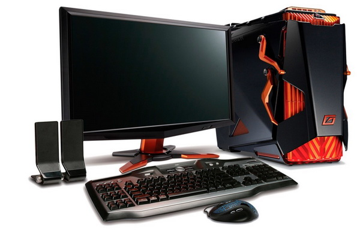

Персональный компьютер

Персона́льный компью́тер, ПК (англ. personal computer, PC), ПЭВМ (персональная электронно-вычислительная
машина) — настольная микро-ЭВМ, имеющая эксплуатационные характеристики бытового прибора и универсальные
функциональные возможности[1].
Согласно ГОСТ 27201-87, ПК применяются как средства массовой автоматизации (в основном для создания
на их основе автоматизированных рабочих мест) в социальной и производственных сферах деятельности в
различных областях народного хозяйства и предназначенные для пользователей, не обладающих специальными
знаниями в области вычислительной техники и программирования.
Изначально компьютер был создан как вычислительная машина, но ПК также используется в других целях —
как средство доступа в информационные сети и как платформа для мультимедиа (мультимедиастанция) и
компьютерных игр (игровой ПК).